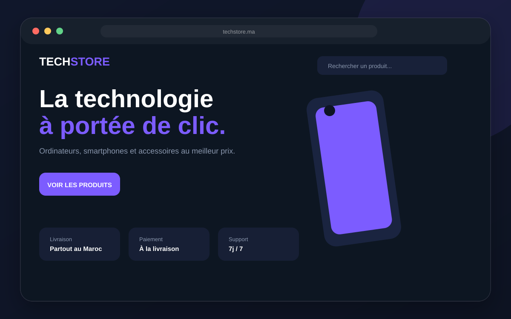
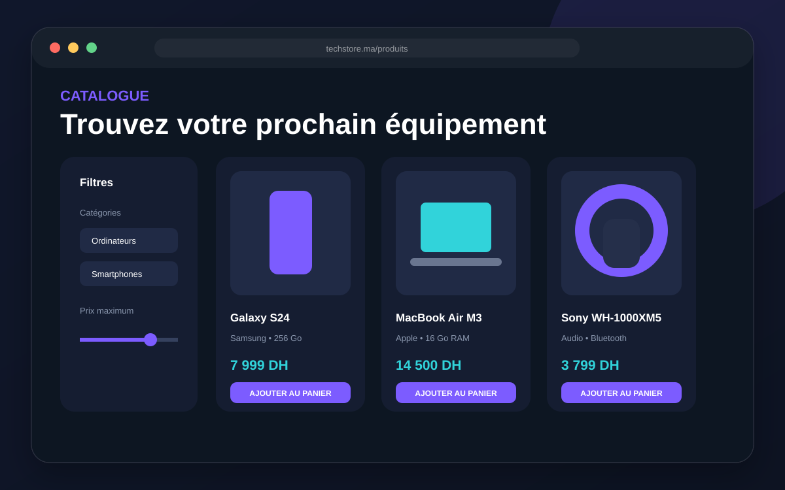
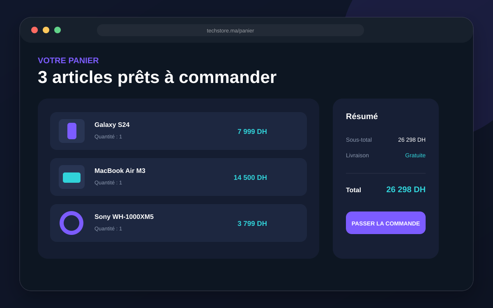
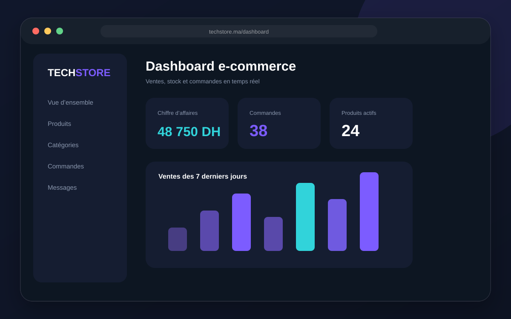

Recherche, catégories, prix et disponibilité des produits.
Boutique e-commerce Django
TechStore
Une boutique en ligne complète pour présenter des produits, gérer le panier et suivre les commandes.

Le projet
TypeE-commerce
StackDjango • JavaScript • SQLite
Durée cible14 à 21 jours
RôleDesign & développement complet
Objectif
Permettre à un magasin de vendre en ligne grâce à un catalogue filtrable, un panier fonctionnel, des comptes clients et un dashboard de gestion des commandes.
Les écrans ci-dessous montrent plusieurs parties du projet, et pas uniquement sa page d’accueil.
Présentation complète
Les écrans du projet
Accueil, fonctionnalités principales et espace de gestion.



Fonctionnalités réellement intégrées
Ajout, modification des quantités et calcul automatique.
Inscription, connexion, favoris et historique des commandes.
Suivi du statut depuis le dashboard administrateur.
Produits, catégories, prix et quantités modifiables.
Parcours d’achat optimisé pour mobile et ordinateur.
Vous souhaitez un projet similaire ?
Expliquez votre activité et recevez une proposition adaptée à votre budget.
Parler du projet